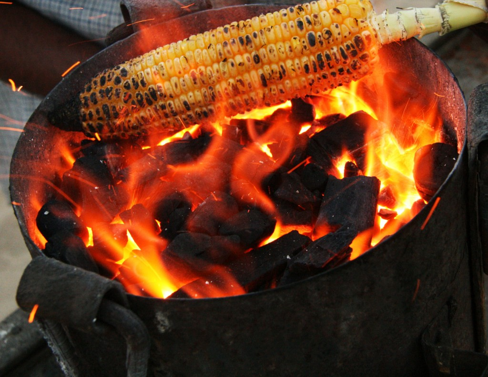

The Versatile Corn
Ingredients
6 ears corn on the cob, blanched1 cup mayonnaise
.25 cup store bought mint chutney
2 tsp. chili powder
2 limes, zested and juiced
2 tsp. kosher salt
2 cups Parmesan cheese, grated fine
12 8-inch bamboo skewers, soaked in water for 30 minutes
Preparation Method
In a mixing bowl, combine the mayonnaise, mint chutney chili powder,, lime zest, lime juice and salt. Cut the corn in half so you have 12 pieces, insert skewers into the ends of the corn being careful not to push the skewers through the other end. Place corn on the grill to warm and slightly roasted, 2 to 5 minutes. Once warm, brush the grilled corn with the chutney mixture and then roll in Parmesan cheese.